Istoria FIFA World Cup
 N
u există nimic în fotbal care să se poată compara cu Campionatul Mondial. Chiar dacă UEFA Champions League
poate produce jocuri de aceeași calitate, nu poate surclasa statutul câștigat din tradiția îndelungată și
faptul că o echipă reprezintă o țară întreagă. Niciun alt eveniment sportiv nu poate concura în semnificație:
cea mai recentă Cupă Mondială FIFA a ajuns la peste trei miliarde de spectatori de televiziune din întreaga lume și un miliard a urmărit finala.
N
u există nimic în fotbal care să se poată compara cu Campionatul Mondial. Chiar dacă UEFA Champions League
poate produce jocuri de aceeași calitate, nu poate surclasa statutul câștigat din tradiția îndelungată și
faptul că o echipă reprezintă o țară întreagă. Niciun alt eveniment sportiv nu poate concura în semnificație:
cea mai recentă Cupă Mondială FIFA a ajuns la peste trei miliarde de spectatori de televiziune din întreaga lume și un miliard a urmărit finala.
Background
Înainte de inaugurarea Campionatului Mondial, turneul de fotbal organizat ca parte a Jocurilor Olimpice de vară a primit cel mai mult prestigiu. În anii 1920, jocul se confrunta cu o tranziție la profesionalism care nu era în concordanță cu spiritul olimpic. Prin urmare, organismul guvernamental, FIFA, și-a făcut planuri pentru organizarea unui Campionat Mondial. Decizia de a aranja prima ediție a fost declarată oficial pe 26 mai 1928.
Toate Campionatele Mondiale
Primul Campionat Mondial s-a jucat în Uruguay, iar de atunci turneul a avut loc în fiecare al patrulea an (cu excepții de întrerupere din cauza celui de-al Doilea Război Mondial). Încă de la primul Campionat Mondial oficial din 1930, FIFA rămăsese organizatorul. Cu toate acestea, au existat Campionate Mondiale pre-FIFA neoficiale deja la sfârșitul anilor 1800, în an atunci existau doar puține echipe naționale. Un alt „campionat mondial” neoficial aranjat înainte de 1930 a fost Trofeul Sir Thomas Lipton organizat în 1909 și 1911. Pe lângă aceasta, competițiile de fotbal olimpice de vară ar fi o marcă din care au fost cele mai bune echipe naționale înainte de 1930 - turneele olimpice constau totuși doar din amatori echipe din cauza reglementărilor, astfel că Cupa Mondială a devenit „oferta reală”.
1930: Uruguay
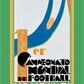Echipa Castigatoare: Uruguay
Marcatorul Turneului: Guillermo Stábile (8 goals)
Jucatorul Turneului: José Nasazzi
1934: Italia
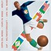Echipa Castigatoare: Italy
Marcatorul Turneului: Oldrich Nejedly (5 goals)
Jucatorul Turneului: Giuseppe Meazza
1938: Franta
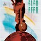Echipa Castigatoare: Italia
Marcatorul Turneului: Leônidas (7 goals)
Jucatorul Turneului: Leônidas
1950: Brazilia
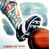Echipa Castigatoare: Uruguay
Marcatorul Turneului: Ademir (8 goals)
Jucatorul Turneului: Zizinho
1954: Elveția
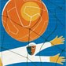Echipa Castigatoare: Germania de Vest
Marcatorul Turneului: Sandor Kocsis (11 goals)
Jucatorul Turneului: Ferenc Puskás
1958: Suedia
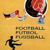Echipa Castigatoare: Brazilia
Marcatorul Turneului: Just Fontaine (13 goals)
Jucatorul Turneului: Didi
1962: Chile
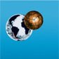Echipa Castigatoare: Brazilia
Marcatorul Turneului: Garrincha (4 goals)
Jucatorul Turneului: Garrincha
1966: Anglia
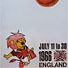Echipa Castigatoare: Anglia
Marcatorul Turneului: Eusebio (9 goals)
Jucatorul Turneului: Bobby Charlton
1970: Mexic
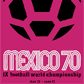Echipa Castigatoare: Brazilia
Marcatorul Turneului: Gerd Müller (10 goals)
Jucatorul Turneului: Pelé
1974: Germania de Vest
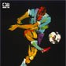Echipa Castigatoare: Germania de Vest
Marcatorul Turneului: Grzegorz Lato (7 goals)
Jucatorul Turneului: Johan Cruyff
1978: Argentina
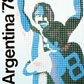Echipa Castigatoare: Argentina
Marcatorul Turneului: Mario Kempes (6 goals)
Jucatorul Turneului: Mario Kempes
1982: Spania
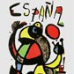Echipa Castigatoare: Italia
Marcatorul Turneului: Paolo Rossi (6 goals)
Jucatorul Turneului: Paolo Rossi
1986: Mexic
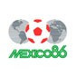Echipa Castigatoare: Argentina
Marcatorul Turneului: Gary Lineker (6 goals)
Jucatorul Turneului: Diego Maradona
1990: Italia
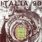Echipa Castigatoare: Argentina
Marcatorul Turneului: Salvatore Schillaci (6 goals)
Jucatorul Turneului: Salvatore Schillaci
1994: Statele Unite
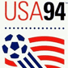Echipa Castigatoare: Brazilia
Marcatorul Turneului: Hristo Stoichkov (6 goals)
Jucatorul Turneului: Romario
1998: Franța
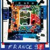Echipa Castigatoare: Franța
Marcatorul Turneului: Davor Suker (6 goals)
Jucatorul Turneului: Ronaldo
2002: Koreea / Japonia
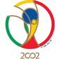Echipa Castigatoare: Brazilia
Marcatorul Turneului: Ronaldo (8 goals)
Jucatorul Turneului: Oliver Kahn
2006: Germania
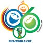Echipa Castigatoare: Italia
Marcatorul Turneului: Miroslav Klose (5 goals)
Jucatorul Turneului: Zinedine Zidane
2010: Africa de Sud
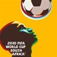Echipa Castigatoare: Spania
Marcatorul Turneului: Thomas Müller (5 goals)
Jucatorul Turneului: Diego Forlán
2014: Brazilia
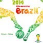Echipa Castigatoare: Germania
Marcatorul Turneului: James Rodriguez (6 goals)
Jucatorul Turneului: Lionel Messi
2018: Rusia
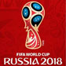Echipa Castigatoare: Franța
Marcatorul Turneului: Harry Kane (6 goals)
Jucatorul Turneului: Luka Modrić